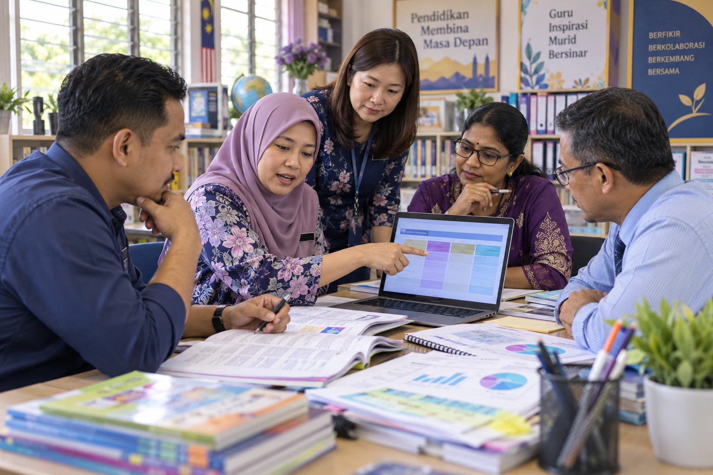

Membina RPH Berbeza Aras
RPH bagi kumpulan pemulihan, sederhana dan pengayaan lengkap dengan objektif, aktiviti dan pentaksiran.
Buka latihan →Latihan kepimpinan instruksional untuk menyokong perancangan PdP, pentaksiran, intervensi, PBD dan pencerapan guru.

Mencipta, menyesuaikan dan menganalisis bahan PdP.
RPH bagi kumpulan pemulihan, sederhana dan pengayaan lengkap dengan objektif, aktiviti dan pentaksiran.
Buka latihan →Set soalan kontekstual, aras kognitif, skema jawapan dan jadual spesifikasi ringkas.
Buka contoh prompt →Rubrik analitik empat tahap dengan kriteria dan deskriptor yang jelas serta boleh diukur.
Kenal pasti jurang penguasaan, kelompokkan murid dan bina pelan intervensi empat minggu.
Bandingkan tahap penguasaan, kesan murid tanpa perkembangan dan hasilkan ringkasan untuk mesyuarat panitia.
Tukarkan catatan pencerapan kepada maklum balas profesional, soalan refleksi dan pelan penambahbaikan guru.
Semakan dan penghasilan bahan berdasarkan dokumen sumber.
Semak hubungan antara standard pembelajaran, objektif, aktiviti, instrumen pentaksiran dan hasil murid.
Gunakan DSKP, nota dan bahan pengajaran untuk membina soalan objektif, struktur, KBAT dan skema.
Hasilkan nota, FAQ, kuiz, peta minda, slaid, kad imbas dan ringkasan audio melalui Studio.
Gunakan watak pentadbir sekolah untuk komunikasi visual yang konsisten.
Bina profil, lembaran watak, skrip dan storyboard tiga babak untuk video 10 saat dengan watak pentadbir sekolah.
Buka latihan lengkap →Tukar dataset rekaan kepada data disahkan, infografik, poster dan dashboard HTML.
Buka latihan lengkap →Rancang dan hasilkan video 10 saat daripada brief, skrip, storyboard dan tiga syot pendek.
Buka latihan lengkap →Latihan penyediaan slaid, infografik, standard grafik dan Prompt visual sekolah.